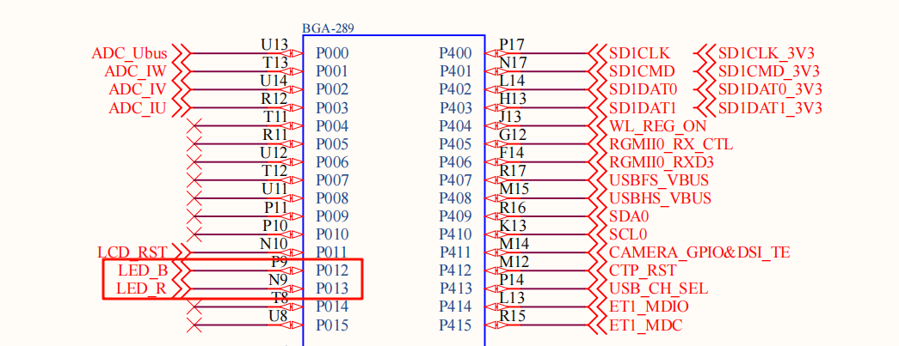
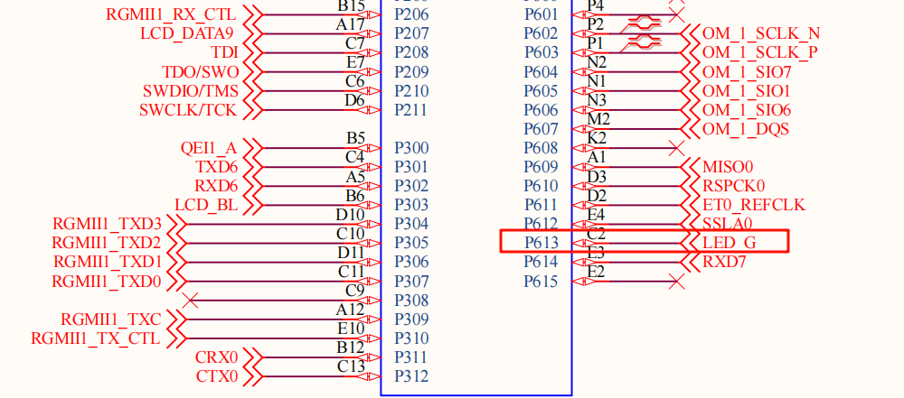

RA8P1 Titan Board 开发板 RGB 使用说明
中文|English
简介
本例程作为SDK 的第一个例程，也是最简单的例程，类似于程序员接触的第一个程序 Hello World 一样简洁。它的主要功能是让板载的 RGB-LED 进行周期性闪烁。
硬件说明


如上图所示，Titan Board 提供三个用户LED，分别为LED_R（RED）、LED_B（BLUE）、LED_G（GREEN），其中 LED_B 对应引脚P012。单片机引脚输出低电平即可点亮LED ，输出高电平则会熄灭LED。
LED在开发板中的位置如下图所示：

软件说明
本例程的源码位于/projects/Titan_basic_blink_led。RGB-LED 对应的单片机引脚定义及 RGB 变换源码可以通过查阅 src/hal_entry.c中。
/* 配置 LED 灯引脚 */
#define LED_PIN_R BSP_IO_PORT_00_PIN_13
#define LED_PIN_B BSP_IO_PORT_00_PIN_12
#define LED_PIN_G BSP_IO_PORT_06_PIN_13
/* 定义 LED 亮灭电平 */
#define LED_ON (0)
#define LED_OFF (1)
/* 定义 8 组 LED 闪灯表，其顺序为 R B G */
static const rt_uint8_t _blink_tab[][3] =
{
{LED_OFF, LED_OFF, LED_OFF},
{LED_ON, LED_OFF, LED_OFF},
{LED_OFF, LED_ON, LED_OFF},
{LED_OFF, LED_OFF, LED_ON},
{LED_ON, LED_OFF, LED_ON},
{LED_ON, LED_ON, LED_OFF},
{LED_OFF, LED_ON, LED_ON},
{LED_ON, LED_ON, LED_ON},
};
void hal_entry(void)
{
rt_kprintf("\nHello RT-Thread!\n");
rt_kprintf("==================================================\n");
rt_kprintf("This example project is a RGB flicker routine!\n\n");
rt_kprintf("==================================================\n");
unsigned int count = 0;
unsigned int group_num = sizeof(_blink_tab)/sizeof(_blink_tab[0]);
unsigned int group_current;
/* 设置 RGB 灯引脚为输出模式 */
rt_pin_mode(LED_PIN_R, PIN_MODE_OUTPUT);
rt_pin_mode(LED_PIN_G, PIN_MODE_OUTPUT);
rt_pin_mode(LED_PIN_B, PIN_MODE_OUTPUT);
rt_pin_write(LED_PIN_R, LED_OFF);
rt_pin_write(LED_PIN_G, LED_OFF);
rt_pin_write(LED_PIN_B, LED_OFF);
do
{
/* 获得组编号 */
group_current = count % group_num;
/* 控制 RGB 灯 */
rt_pin_write(LED_PIN_R, _blink_tab[group_current][0]);
rt_pin_write(LED_PIN_B, _blink_tab[group_current][1]);
rt_pin_write(LED_PIN_G, _blink_tab[group_current][2]);
/* 输出 LOG 信息 */
LOG_D("group: %d | red led [%-3.3s] | | blue led [%-3.3s] | | green led [%-3.3s]",
group_current,
_blink_tab[group_current][0] == LED_ON ? "ON" : "OFF",
_blink_tab[group_current][1] == LED_ON ? "ON" : "OFF",
_blink_tab[group_current][2] == LED_ON ? "ON" : "OFF");
count++;
/* 延时一段时间 */
rt_thread_mdelay(500);
}while(count > 0);
}
编译&下载
RT-Thread Studio：在 RT-Thread Studio 的包管理器中下载 Titan Board 资源包，然后创建新工程，执行编译。
编译完成后，将开发板的 Jlink 接口与 PC 机连接，然后将固件下载至开发板。
运行效果
按下复位按键重启开发板，观察开发板上 RBG-LED 的实际效果。正常运行后，RGB 会周期性变化。
此时也可以在 PC 端使用终端工具打开开发板的默认配置的串口，设置波特率为115200N。开发板的运行日志信息即可实时输出出来。
\ | /
- RT - Thread Operating System
/ | \ 5.2.0 build Jul 30 2025 13:29:07
2006 - 2024 Copyright by RT-Thread team
Hello RT-Thread!
==================================================
This example project is an RGB flicker routine!
==================================================
[D/main] group: 0 | red led [OFF] | | blue led [OFF] | | green led [OFF]
[D/main] group: 1 | red led [ON ] | | blue led [OFF] | | green led [OFF]
[D/main] group: 2 | red led [OFF] | | blue led [ON ] | | green led [OFF]
[D/main] group: 3 | red led [OFF] | | blue led [OFF] | | green led [ON ]
[D/main] group: 4 | red led [ON ] | | blue led [OFF] | | green led [ON ]
[D/main] group: 5 | red led [ON ] | | blue led [ON ] | | green led [OFF]
[D/main] group: 6 | red led [OFF] | | blue led [ON ] | | green led [ON ]
[D/main] group: 7 | red led [ON ] | | blue led [ON ] | | green led [ON ]